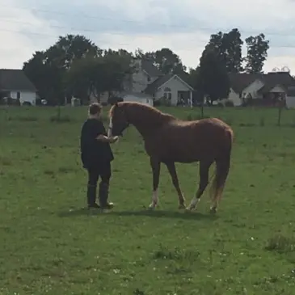

Our "Hisstory"
Riggi Rescue was born out of rescuing a rambunctious colt named Windfield. Over the last five years of rescuing all sorts of farm animals, we have moved towards the rescue of cats and kittens, providing care for the most critical of cases.
With help from volunteers and local vets, we are able to provide TNR services for feral colonies, cat rescue, critical vet care, as well as adoption and foster for cats/kittens. We always have cats that need homes, so please check out our adoption page to see the list!